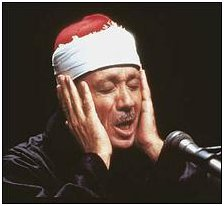

Contributi multimediali |
1Abbellire la voce durante la recita del santo Corano viene considerata un' arte che presso i musulmani ha brillato fin dalla nascita dell'Islam già all'inizio della rivelazione. I compagni del Profeta hanno imparato il nobile Corano dalla bocca dell'amato di Dio, il Messaggero Mohammed, e le parole del Signore raggiunto la loro anima. Alcuni dei compagni si distinguevano per la bellezza della loro voce durante la recita del Corano ed il Profeta (pace e bene su di lui), traeva piacere nell' ascoltare il Corano recitato con il cuore dai compagni. Disse di Salim mawla 2, lo schiavo emancipato di Abi Hudhayfah, che fu un eccellente qari: "Grazie a Dio che ha portato un uomo come quello nella mia comunità". Il Messaggero mostrò il suo apprezzamento verso la recitazione di Abu Musa Al-Ashaari 3, e disse che Ubayy Ibn Ka'b4 è stato uno dei migliori qari nella sua comunità. E la stupenda recitazione del nobile Profeta stesso? Jubayr Ibn Mut'im5 dice: "Ho sentito il Messaggero, pace su di lui, recitare la preghiera del tramonto con la surat At-Tur 6, non ho mai sentito prima una così bella recitazione". E , quando ho sentito recitare il seguente versetto: " Sono stati forse creati dal nulla oppure sono essi stessi i creatori?" Ho pensato che la mia anima fondesse ed il mio cuore stesse per volare. Video recitazione Sono qui raccolti alcuni video, scelti su http://www.youtube.com fra quelli disponibili, affinché ci si possa fare un'idea della recitazione in pubblico. Ogni video rappresenta diversi stili e la diversa personalità del qari.
Video Athan Un'altra sonorità onnipresente nei paesi islamici é il richiamo alla preghiera, l'Adhan, che cinque volte al giorno viene oggi perlopiù trasmesso dai minareti mediante altoparlanti. Ogni regione geografica mostra caratteristiche sonore a volte alquanto diverse.
 Nato nel 1927 ad Arment, 10 km a sud du Luxor, governatorato di Qena, Alto Egitto, con una reputazione consolidatasi nella sua regione, nel 1950 giunse al Cairo. Primo recitatore nella sua famiglia anche se il nonno fu studente presso Al-Azhar. Si tratta probabilmente del più noto recitatore egiziano fuori dal suo paese, fu infatti il primo ad effettuare registrazioni commerciali delle proprie recitazioni oltre a viaggiare estensivamente all'estero. Nel 1952 diventò il recitatore ufficiale della moschea Imam Ash-Shafi, nel 1985 della moschea Al Husayn, sempre al Cairo. Incise tutto il testo coranico sia nello stile murattal7 e mujawwad7. Egli fu il primo presidente del neo costituito sindacato "Unione dei Recitatori", Niqabah l il-Qurra' , nel 1978. Ammirato per la sua capacità di controllo della respirazione e la sua voce chiara ed acuta, mancò il 30 novembre 1988. Riceverà postumi i pubblici onori al merito da parte del presidente egiziano Hosni Mubarak , durante la notte del destino, Layla al Qadr, nel Ramadan del 1990 Questa colorita narrazione biografica, liberamente riassunta da http://www.assajda.com/en/coran/abdelbasset-abdessamad-2.html, testimonia l'ammirazione, la stima e l'affetto che ancora oggi, quasi più di ieri, nutre la sua gente per questo recitatore Sa'idi Generazione dopo generazione, i musulmani padroneggiarono l'arte di recitare il Corano nei termini e nelle regole della conosciuta recitazione del Profeta che inquadrarono nella scienza del Tajwid, ovvero la corretta dizione e la perfezione della recitazione. Dio ha voluto che l' Egitto divenisse un' area brillante nella recitazione del Corano, in particolare negli ultimi due secoli. Molti studiosi, come lo sheikh Muhammad Ahmad Al-Mitualli (morto nel 1895) o lo Sheikh "Amir" Uthman (morto nel 1988), hanno dedicato loro stessi al servizio del Corano componendo diverse opere che si occupano di scienze e recitazione coranica. Altre figure eccellenti nella recitazione del Corano, grazie al dono divino che era stato dato loro, furono lo sheikh Muhammad Rif'at, sheikh Mustapha Isma'il, lo sheikh Abu al Aynayn sh'aysha ', lo sheikh Mahmud Khalil Al-Husarî, lo sheikh Muhammad al-Siddiq Minshâwî, lo sheikh Yusuf al-Kamil Bahtîmî e lo sheikh ' Abd Al-Basit 'Abd As-Samad. Questi grandi maestri brillavano incredibilmente nel mondo della recitazione. La loro influenza si conferma con una famosa citazione: "il Santo Corano fu rivelato alla Mecca , recitato al Cairo e trascritto a Istanbul." Nato e vissuto tra i maestri, lo sheikh Abd Al-Basit Muhammad Abd As-Samad ha recitato conquistando il cuore di tutti i musulmani senza alcuna eccezione. La sua stella brillò nel mezzo del XX secolo e la sua reputazione fu sempre in crescita, anche dopo la sua morte. Dio dà ciò che vuole a chi vuole. Questo abile recitatore naque nel villaggio di Armant, governatorato di Qena in alto Egitto nel 1927. Fin dalla sua tenera infanzia, il suo cuore anelava la recitazione del Corano. Percorreva chilometri per arrivare ad un vicino villaggio dove avrebbe potuto ascoltare, seduto in un caffè, il salmodiare coranico degli sheikh Muhammad Rif'ât e Ash-sha 'shai trasmessi attraverso la radio dal Cairo. Il giovane Abd Al-Basit confessò al padre la sua volontà di dedicarsi all'apprendimento di Corano e delle sue regole di recitazione. I fratelli maggiori dello Sheikh Abd Al-Basit invece proseguirono l'apprendimento delle scienze islamiche presso la prestigiosa Università di Al-Azhar. Il padre sentì la motivazione del figlio e lo incoraggiò inviandolo a Tanta, sul delta del Nilo, alla casa del faro, nota per la presenza di saggi e bravi recitatori. Fu anche seguito dallo sheikh Muhammad Salim, professore di recitazione coranica, che lasciò il nord dell'Egitto e rimase in un villaggio dell' alto Egitto, vicino al villaggio dello Sheikh Abd Al Basset's. Suo padre aiutò il figlio nella memorizzazione del Corano già all'età di 10 anni. Successivamente apprese dal suo sheikh le 7 letture (al-qirâ'ât as-sab'). L'impegno del professore consentì al suo allievo risultati brillanti e all'avanguardia. Lo prese con se durante tutte le cerimonie per la recitazione coranica ed aveva l'abitudine di incoraggiarlo a recitare in pubblico, nonostante la giovane età. Questa pratica in pubblico perfezionò il talento di Abd Al-Basit e la sua fama crebbe durante le notti nel mese di Ramadan in Alto Egitto. In quelle notti si raccoglieva una grande folla venuta ad ascoltare le recitazioni. Anche gli anniversari per i santi furono grandi appuntamenti per i migliori recitatori della regione. L'alto Egitto aveva già un peso significativo in materia grazie alla recitazione coranica dello sheikh Siddiq Al-Minshawi, padre dello sheikh Muhmûd Siddiq Al-Minshawi e fratello maggiore dello sheikh Muhammad Al-Siddiq Minshawi, ed inoltre gli sheikh Abd Ar-Radi, A Wadi Al-Quisi, tra i molti recitatori, quelli che hanno profondamente influenzato Abd Al-Basset. Quest'ultimo fu sempre sensibile alla voce dei recitatori della provincia settentrionale dell'Egitto, come lo sheikh Muhammad Rif'at e lo sheikh Mustafa Ismail. Nel 1950, in occasione del viaggio verso il Cairo per la celebrazione del compleanno della signora Zaynab numerosi recitatori dell' Alto-Egitto vi si recarono per prendere parte a cerimonie religiose organizzate dalla moschea As-sayyidah Zaynab's. I Maestri della recitazione finirono per convincere lo sheikh Abd Al-Basset, che allora aveva circa 23 anni, ad andare con loro. Fu un giorno di gloria per il giovane recitatore. Pur turbato dalla sua giovane età, sommerso dalla presenza dei più grandi recitatori del paese, lo sheikh Ali Subay, imam della moschea in quel momento, ne approfittò per conoscere il giovane sheikh ed insistere nel presentarlo al pubblico. Iniziò la sua recitazione con il versetto 56 della sura 33: Al Ahzab: "In verità Allah e i Suoi angeli benedicono il Profeta. O voi che credete, beneditelo e invocate su di lui la pace." Il giovane fu benedetto nell'avere una voce seducente, tanto che la gente nelle moschee spesso sorpresa, esclamava: "perché il talento non era noto fino ad ora?" La fama non venne comunque in ritardo. Un anno dopo, lo sheikh Abd Al Basset fu convocato per un test di recitazione molto selettivo trasmesso su Radio Qur'an al Cairo. La giuria era composta dallo sheikh Ad-Dabaâ, Presidente della Lega egiziana dei recitatori, lo sheikh Muhammad Shaltût, futuro recitor di Al-Azhar, e dal grande recitatore sheikh Mahmud Ali Al Banna. Avendo superato brillantemente il test, da allora la sua voce andò in onda ogni settimana al sabato sera.
Mishary Sheikh bin Rashid Al-Afasy o Mishary Ghareeb Mohammed Rashid Al-Rashed Afasy, anche soprannominato Abu Nora è un Qari nato in Kuwait il 5 settembre 1976. Ha studiato al College del Santo Corano e Studi Islamici presso l'Università islamica di Medina (Arabia Saudita), specializzandosi in "le dieci letture e traduzioni del Santo Corano". Lesse il Corano agli Sheikh Ahmed Abdulaziz Al-Zaiat, Sheikh Ibrahim Al-Ali Shahata Samanodei, e Abdurarea Sheikh Radwan impressionando un gran numero di studiosi. Attualmente lo Sheikh Al Mishary Afasy, è imam della Moschea al-Kabir (Grande Moschea), a Kuwait City, ed ogni Ramadan guida il Tarawih in questa moschea. Recentemente ha visitato due moschee negli Stati Uniti d'America: il Centro islamico di Irvine (ICOI) in California e il Centro islamico di Detroit (ICD) nel Michigan. Al Afasy è proprietario di due Space Channel specializzati in recitazione del Corano: Alafasy TV e Alafasy Q. Sposato, ha due figlie. Si distingue oltre alla recitazione anche nel genere musicale melodico Nasheed. Note 1 - tratto da http://www.assajda.com/en/coran/abdelbasset-abdessamad-2.html 2 - Da schiavo con statuto di protezione (mawla) divenne uno dei compagni del Profeta ed adottato da Abu Hudhayfah ibn Utbah della tribù dei Quraysh, non conoscendo il reale nome del padre divenne noto e stimato come Salim mawla Abi Hudhayfah. 3 - Compagno del Profeta, ed importante figura del primo Islam, fu diverse volte governatore di Bassora e Kufa. 4 - Compagno del Profeta, anche conosciuto come Abu Moundhir, partecipò alla battaglia di Badr. 5 - Da nemico del Profeta, avendone ucciso uno zio, fece poi parte dee primi convertiti all'Islam. 6 - Sura 52, At-Tûr (Il Monte), versetto 35. 7 - il tajwid prevede uno stile di recitazione "piano" da utilizzare nella preghiera, il murattal, ed uno che comporta maggiore libertà nella scelta dei tempi da parte del recitatore definito mujawwad |